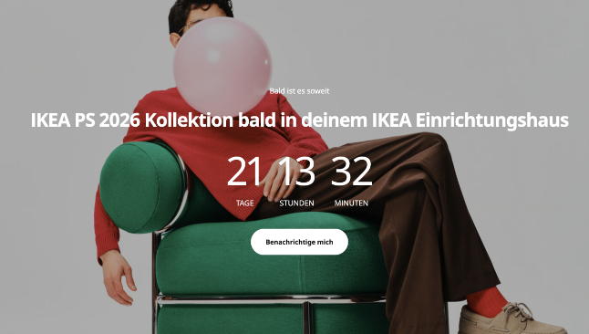
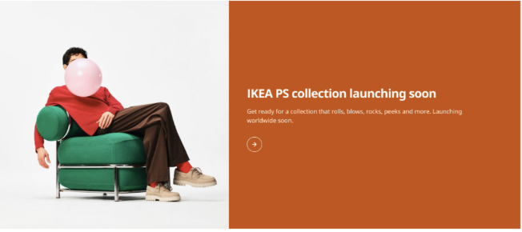
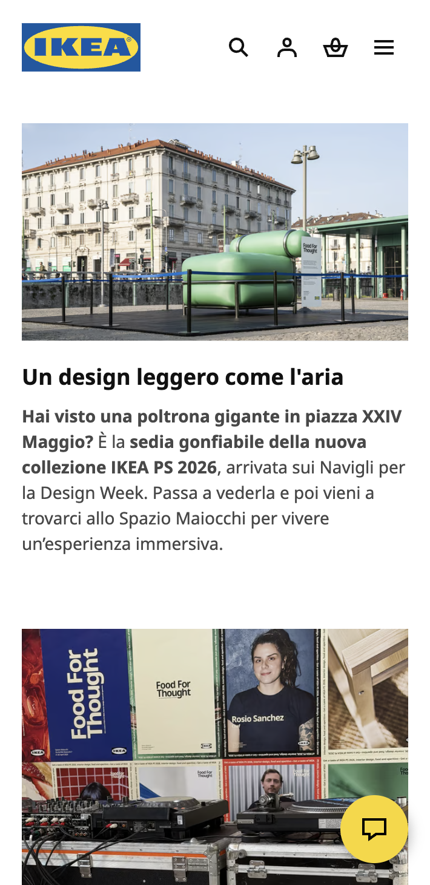
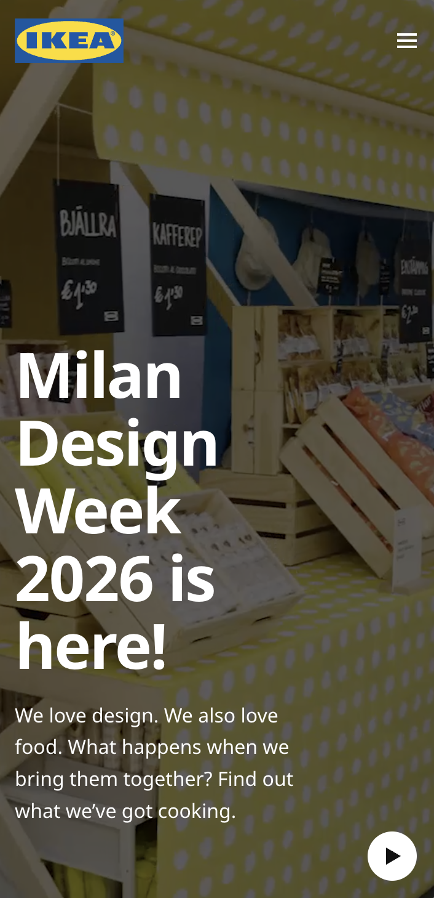
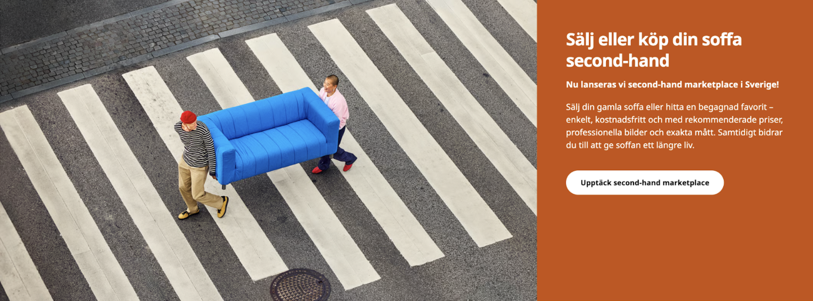
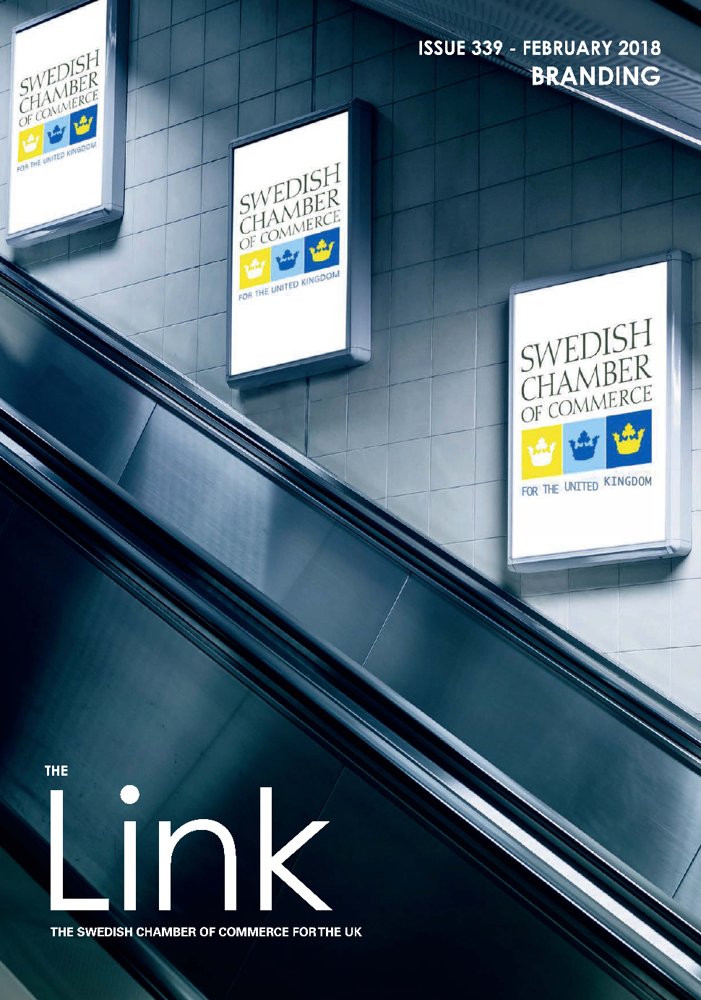
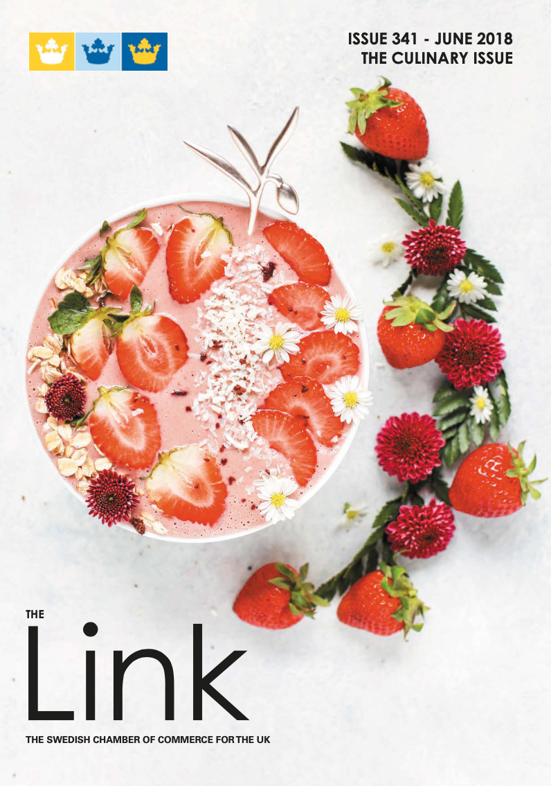

Web content + SEO
IKEA PS 2026 pre-launch
Ahead of the IKEA PS 2026 collection launch, I designed a pre-launch page on IKEA.com based on a data-backed problem: during previous collection launches, customers were navigating to press room articles rather than product pages from organic search. This created a commercial opportunity to increase traffic to a collection page instead of a corporate news page. The pre-launch page combined product teasers, a countdown clock, and a full site takeover to capture customers earlier in the journey.
The page rolled out across 24 markets and generated 710,000 page views and 10,300 "notify me" sign-ups, with 37% of traffic coming from organic search, showing that pre-launch content can support visibility, loyalty acquisition, and early commercial impact.


Web content + design
Milan Design Week 2026
I designed and delivered the event page for the IKEA exhibition at Milan Design Week 2026, a storytelling-led experience to attract visitors, strengthen brand trust, and reflect IKEA as a leader in home furnishing interior design.
The project launched on IKEA.com (global page) and IKEA.it (local page). The global page was picked up and linked to in the New York Times (April 2026) and had a 7% increase in page views compared to the previous year. The local page got 20,500 page views with an average engagement time of 29s (33s globally). The exhibition attracted 45,000 visitors during the week.



UX design + web editing
Ingka Group Annual Summary & Sustainability Report
I designed and edited the web version of the Ingka Group Annual Summary and Sustainability Report FY25 on ingka.com, adapting the structure for ESG reporting and introducing a new on-site navigation, including a new centralised page for Ingka Groups reports, for improved user experience.
The project required close collaboration with developers, sustainability stakeholders, and the social media team ahead of go-live. Page views increased by 5% and report downloads by 8% compared to the previous year.
.png)
Web content + SEO
IKEA Second-hand Marketplace
To support the launch of the IKEA second-hand marketplace, I led the global web content delivery for IKEA.com, including UX design, SEO strategy, and stakeholder alignment across online merchandising, sustainability and digital teams.
The platform itself was not indexed for search, making IKEA.com a critical entry point. The challenge was driving visibility and traffic to the new experience without competing with the core retail journey. The update included a new URL structure recommendation, a full content package and web guidelines with navigation recommendations, customer journey and activation guidelines, and was delivered to five markets in the first roll-out in 2025.

UX design + product development
Order tracking redesign
Customers were contacting support even when their orders were progressing as expected, not because something was wrong, but because the experience didn't tell them enough. I led the product strategy, design sprint and UX design for a redesign of IKEA's global order tracking experience, rolled out across 30+ markets in 2025.
The solution introduced time-based order states, clearer visual hierarchy, and information previously only visible to customer support. The result was a more transparent experience that reduced unnecessary contacts while increasing customer confidence during normal waiting times.
PR
Milan Design Week 2023
Together with a project team, I planned and executed a press conference and 20+ spokesperson interviews with journalists from global media at IKEA's exhibition at Milan Design Week 2023. I also led the production of a behind-the-scenes video of the venue build-up, released as an exclusive with Designboom. The exhibition attracted 77,500 visitors during the week.
.png)
 1 (1).png)


Web design + editorial
Ingka Group Newsroom
The Ingka Group newsroom had an outdated structure and design, was not optimised for search and for how journalists consume news. This project included SEO strategy, a redesign with improved navigation and readability, and a new newsletter approach to grow and retain subscribers.
The work required close stakeholder collaboration to balance editorial needs with technical constraints. Results: 37% increase in unique page views and 453% growth in newsletter subscribers between October 2022 and February 2024.

Editorial
The Link Magazine
Editor of the web and print version of the Link magazine, issued bi-monthly with 80,000 readers per year.

